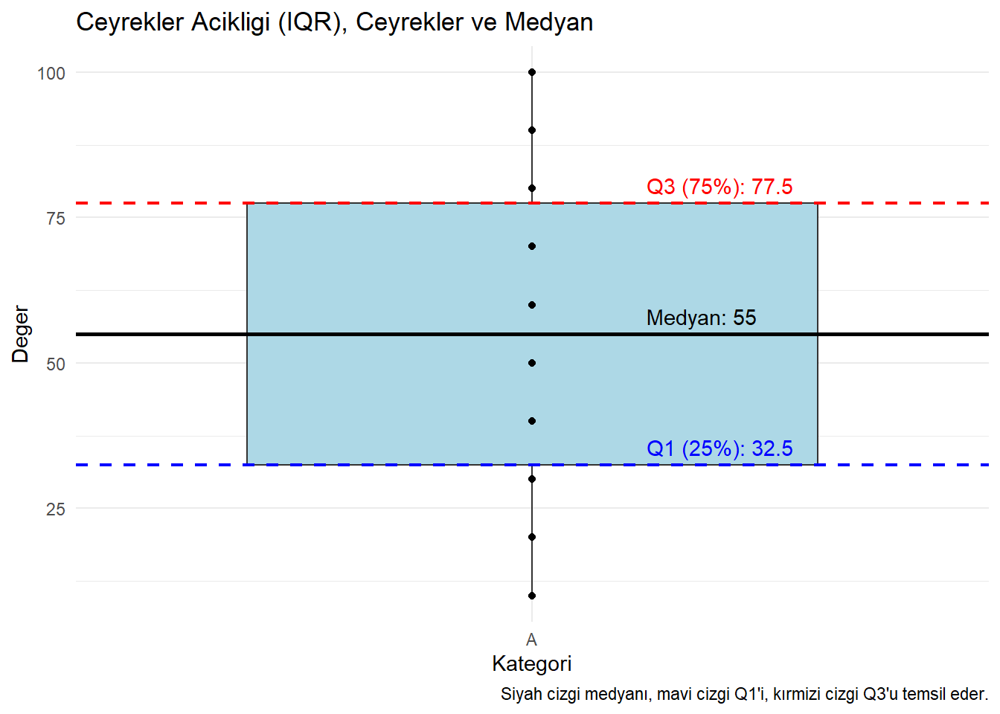

# Bir vektör tanımlama
veri <- c(12, 15, 20, 25, 30, 35, 40, 50)
# Vektörün ortalamasını hesaplama
ortalama <- mean(veri)
# Ortalamayı ekrana yazdırma
print(ortalama)[1] 28.375Merkezi eğilim ve yayılım ölçüleri, bir veri kümesinin genel özelliklerini özetleyen istatistiksel araçlardır. Bu araçlar, veri kümesinin merkezini, dağılımını ve çeşitliliğini anlamak için kullanılır.
Merkezi eğilim ölçüleri, bir veri kümesindeki “merkezi değeri” tanımlamak için kullanılır. Temel merkezi eğilim ölçüleri ortalama, medyan ve moddur.
# Bir vektör tanımlama
veri <- c(12, 15, 20, 25, 30, 35, 40, 50)
# Vektörün ortalamasını hesaplama
ortalama <- mean(veri)
# Ortalamayı ekrana yazdırma
print(ortalama)[1] 28.375Aykırı değerler, bir veri kümesindeki diğer verilere kıyasla çok büyük veya çok küçük olan sıra dışı değerlerdir. Bu değerler, veri kümesinin genel eğilimine uymadığı için ortalamayı önemli ölçüde etkileyebilir.
Neden Ortalamayı Etkiler? Ortalama, tüm değerlerin toplamının veri sayısına bölünmesiyle hesaplanır. Bu nedenle, aşırı büyük veya küçük bir değer toplam üzerinde büyük bir ağırlık oluşturabilir ve ortalamayı bu uç değere doğru kaydırabilir.
# Aykırı değer içermeyen bir veri kümesi
veri_normal <- c(10, 15, 20, 25, 30)
ortalama_normal <- mean(veri_normal)
print(ortalama_normal) # Çıktı: 20[1] 20# Aykırı değer içeren bir veri kümesi
veri_aykiri <- c(10, 15, 20, 25, 1000) # 1000 bir aykırı değerdir
ortalama_aykiri <- mean(veri_aykiri)
print(ortalama_aykiri) # Çıktı: 214[1] 214# Bir veri kümesi tanımlama
veri <- c(3, 5, 7, 9, 11, 13)
# Verinin medyanını hesaplama
medyan <- median(veri)
# Medyanı ekrana yazdırma
print(medyan)[1] 8Medyan, veri kümesindeki sıralanmış değerlerin ortanca noktasını temsil ettiği için, çok büyük ya da çok küçük uç değerler (aykırı değerler) medyanı etkilemez. Bu, medyanı özellikle aykırı değerlere sahip veri setlerinde güvenilir bir merkezi eğilim ölçüsü haline getirir.
Neden Etkilenmez? Medyan, sadece sıralanmış verilerin ortanca noktasını kullanır. Veri kümesindeki en küçük veya en büyük değer, sıralamayı değiştirse bile ortanca değeri değiştirmez.
# Aykırı değer içermeyen bir veri kümesi
veri_normal <- c(10, 15, 20, 25, 30)
medyan_normal <- median(veri_normal)
print(medyan_normal) # Çıktı: 20[1] 20# Aykırı değer içeren bir veri kümesi
veri_aykiri <- c(10, 15, 20, 25, 1000)
medyan_aykiri <- median(veri_aykiri)
print(medyan_aykiri) # Çıktı: 20[1] 20Medyan, hem aykırı değer olmayan hem de aykırı değer içeren veri setlerinde aynı sonucu vermiştir. Bu, medyanın aykırı değerlere karşı dayanıklı olduğunu gösterir.
Medyan, özellikle uç değerlerin bulunduğu durumlarda daha güvenilir bir merkezi eğilim ölçüsü sağlar. Örneğin, gelir dağılımı gibi büyük uç değerlere sahip veri kümelerinde medyan, genellikle ortalamadan daha anlamlı bir ölçü olur.
Tanım: Bir veri kümesinde en sık görülen değerdir. Mod, özellikle kategorik verilerde veya sayısal verilerde tekrarlanan değerleri anlamak için kullanılır.
Özellikler:
# Gerekli kütüphanenin yüklenmesi
# install.packages("modeest") # Eğer yüklenmemişse, bu satırı çalıştırın
library(modeest)
# Bir veri kümesi tanımlama
veri <- c(1, 2, 2, 3, 3, 4, 4, 4, 5, 5, 6)
# Verinin modunu hesaplama (en sık görülen değer)
mod <- mfv(veri)
# Modu ekrana yazdırma
print(mod) # En sık görülen değer: 4[1] 4Kategorik Veri için Mod
Mod, kategorik verilerde en sık görülen kategoriyi belirlemek için de kullanılabilir.
# Gerekli kütüphanenin yüklenmesi
# install.packages("modeest") # Eğer yüklenmemişse bu satırı çalıştırın
library(modeest)
# Bir kategorik veri kümesi tanımlama
kategorik_veri <- c("Kırmızı", "Mavi", "Kırmızı", "Yeşil", "Mavi", "Mavi")
# Kategorik verinin modunu hesaplama (en sık görülen kategori)
mod_kategorik <- mfv(kategorik_veri)
# Modu ekrana yazdırma
print(mod_kategorik) # En sık görülen kategori: "Mavi"[1] "Mavi"Uygulama Alanı: Mod, özellikle kategorik verilerde en sık görülen grubu veya sınıfı anlamak için yararlıdır. Sayısal verilerde de merkezi eğilimi gösterir, ancak tüm veri setini tam olarak temsil etmeyebilir.
Eksiklikler: Mod her zaman var olmayabilir (tekrarlanan bir değer yoksa). Çok modlu veri setlerinde tek bir merkezi eğilim ölçüsü sağlamak zordur.
Mod, veri setindeki tekrarlanan veya en yaygın değeri anlamak için kullanışlı bir araçtır. Ancak veri setinin niteliğine bağlı olarak diğer merkezi eğilim ölçüleri (örneğin, ortalama veya medyan) ile birlikte değerlendirilmesi daha kapsamlı bir analiz sağlar.
Yayılım ölçüleri, veri kümesindeki değerlerin çeşitliliğini veya veri setinin ne kadar yayıldığını ölçmek için kullanılır.
# Bir veri kümesi tanımlama
veri <- c(4, 7, 10, 15)
# Verinin aralığını hesaplama
aralik <- max(veri) - min(veri)
# Aralığı ekrana yazdırma
print(aralik) # Çıktı: 11[1] 11Aralık, yalnızca iki değere (en büyük ve en küçük) bağlıdır. Veri kümesindeki diğer değerleri dikkate almaz. Aykırı değerler varsa yayılımı olduğundan fazla gösterebilir. Dolayısıyla Aykırı değerler (veri kümesindeki diğer değerlere göre çok büyük veya çok küçük olan değerler), aralığı büyük ölçüde etkileyebilir.
Tanım: Verilerin ortalamadan ne kadar uzaklaştığını ölçen bir yayılım ölçüsüdür. Her bir veri noktasının ortalamadan farkının karesi alınarak bu farkların ortalaması hesaplanır. Karesi alındığı için varyans, tüm sapmaları pozitif hale getirir ve yayılımın büyüklüğünü anlamamızı sağlar. var() fonksyonu ile hesaplanır.
Popülasyon varyansı: \(\sigma^2 = \frac{\sum{(x_i - \mu)^2}}{N}\)
Örneklem varyansı: \(s^2 = \frac{\sum{(x_i - \bar{x})^2}}{n-1}\)
# Bir veri kümesi tanımlama
veri <- c(2, 4, 6)
# Verinin ortalamasını hesaplama
ortalama <- mean(veri)
print(ortalama) # Çıktı: 4[1] 4[1] 4Hesaplama Adımları
# Daha geniş bir veri kümesi tanımlama
veri_genis <- c(5, 10, 15, 20, 25)
# Verinin ortalamasını hesaplama
ortalama_genis <- mean(veri_genis)
print(ortalama_genis) # Çıktı: 15[1] 15[1] 62.5Hesaplama Adımları
Varyans, veri kümesindeki yayılımı anlamak için güçlü bir araçtır. Ancak birimi farklı olduğu için doğrudan yorumlamak yerine genellikle standart sapma ile birlikte değerlendirilir. Daha büyük veri kümelerinde varyans, verilerdeki farklılıkları daha doğru bir şekilde yansıtır.
Tanım: Standart sapma, veri değerlerinin ortalamadan ne kadar saptığını gösteren bir yayılım ölçüsüdür. Varyansın karekökü olarak hesaplanır ve birimi, veri birimiyle aynıdır. Bu özelliği, standart sapmayı yorumlamayı daha kolay hale getirir. sd() fonksyonu ile hesaplanır.
Popülasyon Standart Sapması: \(\sigma = \sqrt{\frac{\sum{(x_i - \mu)^2}}{N}}\)
Örneklem Standart Sapması: \(s = \sqrt{\frac{\sum{(x_i - \overline{x})^2}}{n-1}}\)
# Bir veri kümesi tanımlama
veri <- c(2, 4, 6)
# Verinin standart sapmasını hesaplama
std_sapma <- sd(veri)
# Standart sapmayı ekrana yazdırma
print(std_sapma) # Çıktı: 2[1] 2Hesaplama Adımları:
Standart sapma, verilerin yayılımını ve dağılımını anlamak için güçlü bir araçtır. Yorumlanması kolaydır ve birimi koruduğu için veri analizi sırasında sıkça tercih edilir. Ancak, aykırı değerlere duyarlılığı nedeniyle dikkatli bir şekilde değerlendirilmelidir.
Çeyrekler açıklığı (IQR) şu şekilde hesaplanır: \(IQR = Q3 - Q1\)
Burada \(Q1\): Birinci çeyrek, verilerin en küçük %25’lik kısmının üst sınırıdır. \(Q3\): Üçüncü çeyrek ise, verilerin en küçük %75’lik kısmının üst sınırıdır.
# Daha büyük bir veri kümesi tanımlama
veri_genis <- c(10, 20, 30, 40, 50, 60, 70, 80, 90, 100)
# Çeyreklerin hesaplanması
q1_genis <- quantile(veri_genis, 0.25) # Birinci çeyrek (Q1)
q3_genis <- quantile(veri_genis, 0.75) # Üçüncü çeyrek (Q3)
# Çeyrekler açıklığı
cayrekler_acikligi_genis <- q3_genis - q1_genis
# Çeyrekler açıklığını ekrana yazdırma
print(cayrekler_acikligi_genis) # Çıktı: 5075%
45 Açıklama: 1. Veri kümesi: \((10, 20, 30, 40, 50, 60, 70, 80, 90, 100)\)
2. Birinci çeyrek (Q1): \((35)\) 3. Üçüncü çeyrek (Q3): \((85)\) 4. Çeyrekler açıklığı: \(Q3 - Q1 = 85 - 35 = 50\)

Aykırı Değerlere Dayanıklılık: Çeyrekler açıklığı, yalnızca orta yüzde 50’lik dilimi dikkate alır. Bu nedenle, aykırı değerlerden etkilenmez.
Dağılımın Anlaşılması: Veri setinin yoğunluğu ve yayılımı hakkında bilgi verir.
Çeyrekler açıklığı, yalnızca veri setinin orta kısmını dikkate alır. Eğer veri setinin tümüne dair yayılım bilgisi gerekiyorsa, standart sapma gibi ölçülerle birlikte kullanılması daha yararlı olur.
Çeyrekler açıklığı, aykırı değerlere dayanıklı bir yayılım ölçüsüdür ve özellikle veri setinin merkezi yayılımını anlamak için güçlü bir araçtır. Veri setindeki yoğunluğu ve merkezi eğilimi analiz etmek için sıkça kullanılır.
Özet
Merkezi eğilim ölçüleri (ortalama, medyan, mod), verilerin merkezi bir noktada nasıl toplandığını anlamaya yardımcı olurken, yayılım ölçüleri (aralık, varyans, standart sapma, çeyrekler açıklığı), verilerin çeşitliliğini ve dağılımını anlamayı sağlar. Aykırı değerler, analiz sonuçlarını etkileyebileceği için dikkatli bir şekilde değerlendirilmelidir.
Referanslar
https://www.modernstatisticswithr.com/modchapter.html
https://app.datacamp.com/learn/courses/introduction-to-statistics-in-r